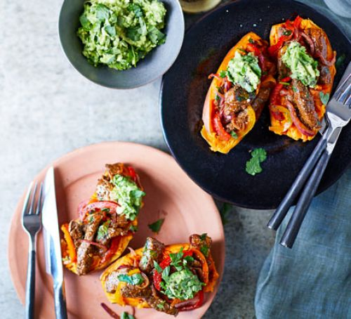
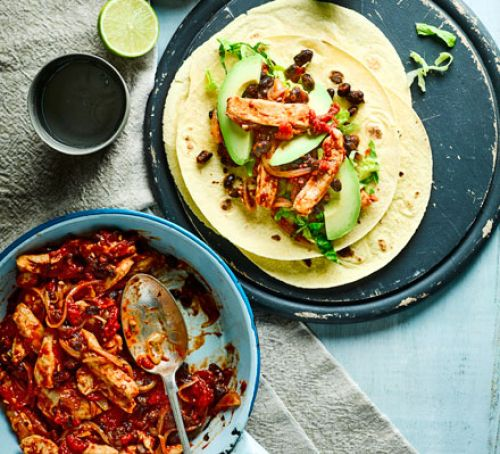

| Baked sweet potatoes with steak fajita filling |
- 4 sweet potatoes
- 2 tbsp live oil, plus extra to rub on the potatoes
- juice 1 lime
- 2 tsp chilli powder
- 1 tsp garlic powder
- 1 tsp ground cumin
- 500g lean beef steak, cut into medium-sized strips
- 2 onions, thinly sliced
- a mixture of 4 orange, yellow and red peppers, thinly sliced
- small handful coriander, chopped
- 2 avocados, halved, stoned and peeled
|
- Heat oven to 220C/200C fan/gas 7. Wash the sweet potatoes, prick them with a fork all over, then rub with a little olive oil and season generously. Wrap each potato in tin foil and bake on a baking tray for 45-55 mins until soft.
- To make the marinade, put the lime juice, chilli powder, garlic powder, cumin, 1 tbsp olive oil and a generous pinch of seasoning in a bowl. Mix everything together, then pour half the marinade into a second bowl. Add the steak to one of the bowls and mix well. Add the onions and peppers to the other bowl and mix to ensure everything is evenly coated. Cover both bowls in cling film and chill in the fridge until needed.
- When the sweet potatoes have about 20 mins left to cook, heat the remaining 1 tbsp olive oil in a large frying pan over a medium heat. Add the onion and pepper mixture, cook for 12-15 mins, stirring often, until they go soft and start to glisten and brown, then tip onto a plate. Wipe the pan clean with some kitchen paper, add the steak and cook for 3-5 mins, stirring often. Add the onions and peppers back to the pan for a few mins before serving, then remove from the heat and stir through most of the coriander.
- Mash the avocado in a bowl with a fork. Add a good pinch of salt and the rest of the coriander.
- To serve, halve each sweet potato lengthways, mash the insides with a fork, then top with a spoonful of the steak fajita mixture and a dollop of mashed avocado. Enjoy!
|
 |
| Chipotle chicken wraps |
- 1 tbsp vegetable oil
- 1 onion, finely sliced
- 1 garlic clove
- 2 chicken breasts, sliced into strips
- 2 tbsp chipotle paste
- 400g can chopped tomatoes
- 400g can black beans, drained
- 4 large corn or flour tortilla wraps
- ½ avocado, stoned, peeled and sliced
- ½ Baby Gem lettuce, shredded
- 1 lime, halved
|
- Heat the oil in a frying pan over a low-medium heat. Toss in the onion and cook for 10 mins until softened. Crush in the garlic and stir for 1 min before adding the chicken. Turn up the heat and brown the chicken all over. Spoon over the chipotle and stir to coat for 1 min. Pour in the tomatoes and bring to the boil. Season well and reduce the heat to a gentle simmer.
- Cook for 5-6 mins or until the chicken is cooked through and any excess liquid has evaporated. Stir the beans through until warmed, then remove from the heat. Warm the wraps following pack instructions.
- Divide the mix between the wraps, top with the avocado and shredded lettuce, and squeeze over the lime. Roll up and cut in half before serving.
|
 |